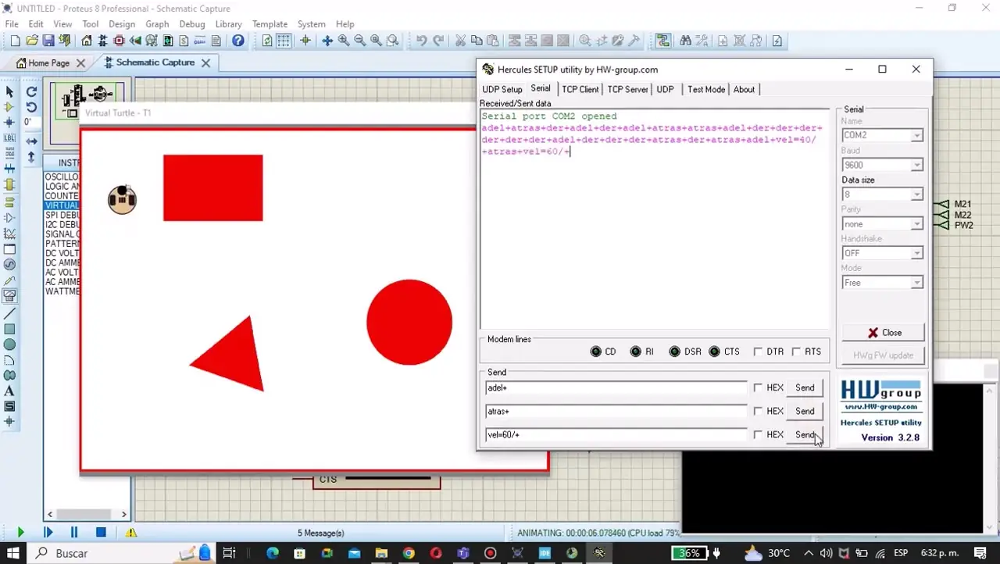

Crea un proyecto nuevo (sin espacios en el nombre), la carpeta LIBRERIA dentro de Core y pega uart.c/.h y PWM.c/.h. Agrégala al include path.
En Connectivity → USART1 modo Asynchronous a 9600 baudios.
Se controla un robot de dos motores DC (simulado con el Turtle de Proteus) con órdenes que llegan por el puerto serial. Primero se configura el TIM1 como PWM a 50 Hz en dos canales (prescaler 16-1 y periodo 20000) y cuatro pines de dirección. Se crean procedimientos para cada motor y para el robot (adelante, atrás, derecha, izquierda, stop). Luego se lee el puerto serial de forma bloqueante con uartx_read_text hasta el carácter '*', se buscan las órdenes con strstr y, para órdenes con valor como vel=60/*, se captura el número con strtok, se convierte con atoi y se aplica al PWM. Las órdenes se envían desde Hercules con puertos COM virtuales.

Crea un proyecto nuevo (sin espacios en el nombre), la carpeta LIBRERIA dentro de Core y pega uart.c/.h y PWM.c/.h. Agrégala al include path.
En Connectivity → USART1 modo Asynchronous a 9600 baudios.
Crea 4 salidas para la dirección: M11 y M12 (motor 1) y M21 y M22 (motor 2). En la clase quedaron en PA0 a PA3.
La mayoría de puentes H usan dos pines por motor para el giro. Algunos usan uno solo: 1 gira a un lado y 0 al otro.
El PWM en estos micros sale de un timer (un contador). En Timers → TIM1 pon Clock Source: Internal Clock.
Prescaler: para contar en microsegundos divide el reloj entre su frecuencia en MHz menos 1. Con 16 MHz: 16-1.
Counter Period: el periodo en microsegundos. 50 Hz = 20 ms = 20000. Para 10 Hz serían 100000 (en un timer de 16 bits el máximo es 65535).
En Channel1 y Channel2 elige PWM Generation CH1/CH2. Quedan en PA8 y PA9.
Al activar el TIM1 en PA9, CubeMX movió el USART1 a otros pines (PB6 TX y PB7 RX). Revisa siempre dónde quedaron tus pines después de un cambio.
En PWM.h descomenta y ajusta las definiciones: a qué timer y canal está cada PWM y su registro de comparación.
Si el PWM está en el canal 1 usa CCR1; si está en el canal 2, CCR2. El número debe coincidir.
#define PWMT1 htim1
#define PWMTIM1 TIM1
#define PWM1_CH TIM_CHANNEL_1
#define PWM1 TIM1->CCR1
#define PWM2_CH TIM_CHANNEL_2
#define PWM2 TIM1->CCR2En USER CODE BEGIN 0 crea los procedimientos de cada motor: derecha pone un pin en 0 y el otro en 1, izquierda al revés, stop los deja iguales.
Copia los tres para el motor 2 cambiando M11/M12 por M21/M22.
void m1derecha(void)
{
HAL_GPIO_WritePin(M11_GPIO_Port, M11_Pin, 0);
HAL_GPIO_WritePin(M12_GPIO_Port, M12_Pin, 1);
}
void m1izquierda(void)
{
HAL_GPIO_WritePin(M11_GPIO_Port, M11_Pin, 1);
HAL_GPIO_WritePin(M12_GPIO_Port, M12_Pin, 0);
}
void m1stop(void)
{
HAL_GPIO_WritePin(M11_GPIO_Port, M11_Pin, 0);
HAL_GPIO_WritePin(M12_GPIO_Port, M12_Pin, 0);
}Combina los motores: adelante (los dos a un lado), atrás, derecha e izquierda (cada motor a un lado distinto) y stop.
El sentido real depende de cómo estén conectados los motores: prueba y corrige.
void adelante(void) { m1derecha(); m2derecha(); }
void atras(void) { m1izquierda(); m2izquierda(); }
void derecha(void) { m1izquierda(); m2derecha(); }
void izquierda(void) { m1derecha(); m2izquierda(); }
void stop(void) { m1stop(); m2stop(); }En la clase el robot no iba hacia adelante: el motor 2 tenía los pines invertidos. Se arregló intercambiando 0 y 1 en m2derecha y m2izquierda.
En USER CODE BEGIN 2 inicia los dos canales y dales una velocidad (0 a 100 %).
PWM_init(&htim1, PWM1_CH); // canal 1 del TIM1
PWM_init(&htim1, PWM2_CH); // canal 2 del TIM1
pwm_valor(&PWM1, 100);
pwm_valor(&PWM2, 100);Usa el modelo TURTLE (robot de dos ruedas). Une sus entradas M11, M12, PW1 y M21, M22, PW2 a los pines del micro con terminales del mismo nombre.
Micro a 16 MHz con el .hex. Al correr se abre la ventana del robot moviéndose.
Si el robot no se mueve, revisa que los canales estén en PWM Generation (no en Output Compare) y vuelve a compilar.
Crea un vector para la trama: char trama_RX[50];
Crea el procedimiento PROCE_RX. Con strstr(trama, "texto") se pregunta si la trama contiene una orden.
Las órdenes son excluyentes, por eso se usa else if.
Para los giros conviene girar un rato y parar; si no, el robot gira demasiado rápido para controlarlo a mano.
char trama_RX[50];
void PROCE_RX(void)
{
if (strstr(trama_RX, "adel")) adelante();
else if (strstr(trama_RX, "atras")) atras();
else if (strstr(trama_RX, "stop")) stop();
else if (strstr(trama_RX, "der"))
{
derecha();
HAL_Delay(300); // depende de tu robot
stop();
}
else if (strstr(trama_RX, "izq"))
{
izquierda();
HAL_Delay(300);
stop();
}
}En el while, uartx_read_text espera hasta recibir el carácter final ('*') o llenar el tamaño de la trama, y luego se llama a PROCE_RX.
Esta lectura es bloqueante: el micro se queda esperando. Sirve si solo controla el robot; si además lee sensores, más adelante se hace con interrupciones.
while (1)
{
uartx_read_text(&huart1, trama_RX, '*', 50);
PROCE_RX();
}En Proteus pon un COMPIM (puerto COM1, 9600) y une su RXD al pin RX del micro (en la simulación no es cruzado). Puedes poner un Virtual Terminal en el mismo cable para ver lo que llega.
Crea el par de puertos virtuales COM1–COM2 y abre Hercules en COM2 a 9600.
Envía adel*, atras*, der*: el robot obedece.
Para la entrega el robot se maneja desde el celular por Bluetooth: la lógica del micro es la misma.
Para cambiar la velocidad se envía, por ejemplo, vel=60/*.
Crea char texto[50]; y una variable para el valor.
strtok(trama, "=") corta la trama en el =. Luego strtok(0, "/") sigue sobre lo mismo y devuelve lo que hay hasta el /: el número como texto.
atoi convierte el texto a entero (atof a flotante). Ese valor va al PWM de los dos motores.
char texto[50];
int valor;
// dentro de PROCE_RX
else if (strstr(trama_RX, "vel="))
{
strcpy(texto, strtok(trama_RX, "=")); // corta en '='
strcpy(texto, strtok(0, "/")); // captura el dato
valor = atoi(texto);
pwm_valor(&PWM1, valor);
pwm_valor(&PWM2, valor);
}En la clase, con atof y una variable float la velocidad no cambió; con int y atoi sí funcionó. Incluye string.h y stdlib.h para strstr, strtok y atoi.